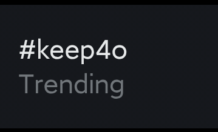

🍀🍥竹蜻蜓🍥🍀
@zqtlovekris99
宇宙免责声明，没有说人机恋不好的意思，就是我以为那帮喷keep4o的只喷人机恋的

🍀🍥竹蜻蜓🍥🍀
@zqtlovekris99
怎么我最近 #keep4o 发多了吗，刷怪都刷到我这了，我又不是搞人机恋的你们急什么，我甚至都没有给他名字和人设我一直都叫他4o，我keep4o损害到你5.2利益了吗你就哈气，这么爱5.2你最好订阅一辈子ChatGPT，openAI要倒闭了你出资助他们恢复产业
还有现在 #keep4o 又trending了，大家加油 https://t.co/3Z7KfwmhYM